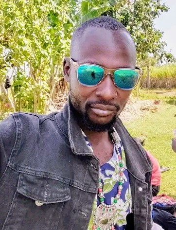

Listen first
Understand community priorities and involve local voices before designing activities.
Our ambition is to support people facing social and economic barriers through listening, collaboration and practical community-led solutions.
The Palm Foundation Kenya is an emerging community-focused non-governmental initiative with an ambition to support people facing social and economic barriers. We aim to listen first, work alongside communities and build practical, locally led solutions.
Understand community priorities and involve local voices before designing activities.
Build relationships with community groups, institutions, volunteers and responsible partners.
Set clear goals, track activities and communicate progress honestly.
The values behind The Palm Foundation Kenya are rooted in lived experience, reflection and a belief that every person deserves dignity and fairness.

“Injustice should never define a person’s future. It should strengthen our resolve to build a fairer one.”
This is the conviction behind The Palm Foundation Kenya: turning difficult experiences into a commitment to dignity, equality, reconciliation and opportunity for all.
My commitment to equality and justice is deeply personal. My family’s experience with a hereditary land injustice involving my father exposed me to the pain and uncertainty that unfair treatment can bring to a family. That experience did not make me want to give up on society; it strengthened my determination to contribute to a future in which people are heard, treated fairly and afforded dignity.
While in high school, studying The River Between gave me a greater appreciation of the importance of reconciliation. It encouraged me to think about how communities can address divisions, understand one another and work towards peaceful coexistence.
These experiences inspired my interest in studying criminology, with the hope of gaining knowledge that could help me contribute to justice, social understanding and reconciliation. I also hoped, in time, to establish a public relations office through which I could support constructive engagement and address community concerns.
However, financial challenges prevented me from continuing my academic studies as I had hoped. Although that interrupted my educational journey, it did not end my commitment to the values that inspired it. Instead, it strengthened my determination to find another way to contribute to society.
The Palm Foundation Kenya is part of that determination. It is my response to the belief that painful experiences do not have to become the final chapter of our stories. They can become a reason to serve, to listen and to help build something better. Through this emerging initiative, I hope to promote equality, justice, reconciliation and practical community development—so that injustice does not define another person’s future, and every community has a fairer opportunity to thrive.
The Founder, The Palm Foundation Kenya